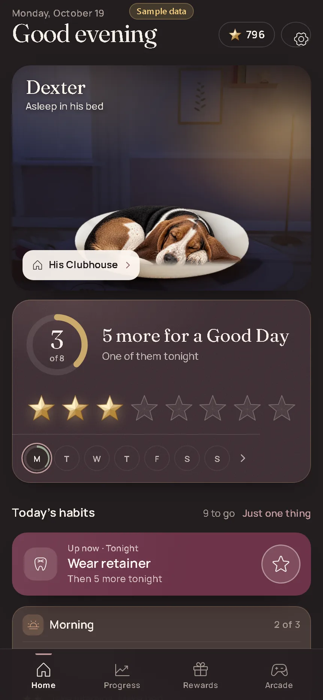

Home · night (Dexter asleep in his bed)
- Area
- Companion
- Screen 13 of 65
- home-night
- Capture
- visible screen (430×932), demo time 22:30, sample data
- Image
- img/13-home-night.webp

Text on this screen
Good evening 3 of 8 Dexter Asleep in his bed Toward a Good Day 5 more habits, one of them tonight T T F S S Surprise Ready 799 Rewards Connect Four Free today verdant Today’s word Today’s habits 9 to go Just one thing Up now · Tonight Wear retainer Then 5 more tonight Morning 2/3 Brush teeth Take vitamins, Make bed Anytime 1/3 Exercise or 7,500 steps Read No unnecessary spending Tonight Now 0/6 Floss Brush teeth Shower Stretch Prep for tomorrow This week 3/9 Tidy the fridge and pantry Finish the laundry Prepare weekly vitamins and medications Take a yoga class 2 more this week Wash your bedding, Clean the bathroom, Clean the car Optional 3 to try Gua sha Journal Make a meal Weekly Bingo 14 of 25 · 1 line Ends tomorrow night · Sunday, Oct 18 6 tokens Life HQ 1 open · plan the week Bonus quests +2 for all three Small things outside your habits. New ones every day. Send a kind message to someone you care about Someone you love · +10 XP Done Book dentist appointment From Life HQ Done Take a photo of something beautiful nearby Something new Done